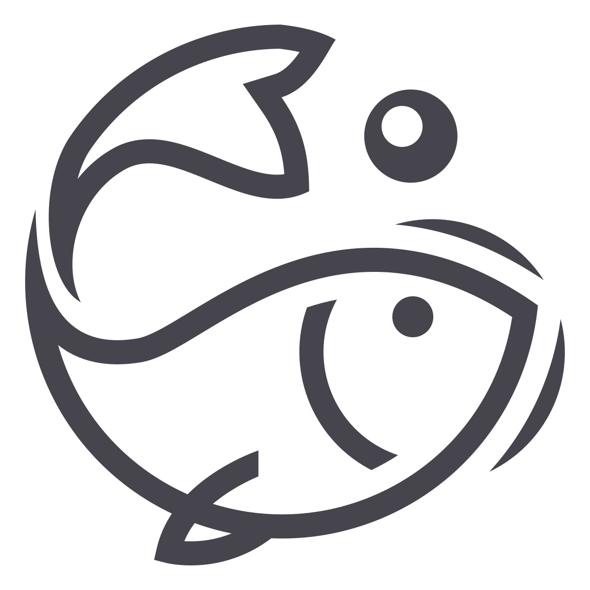

Chao Pescao
¿Como Adoptar?
Para adoptar a una mascota tienes que ir al apartado Mascotas y ver nuestras mascotas
Una vez encuentres tu favorito dale al boton de "Adoptar". Te llevará a un formulario que tendras que rellenar con los datos que te pida
A continuacion, tendras que esperar a que nuestro administrador os contacte por Whatsapp para acordar la cita. Sin cita No hay mascota!